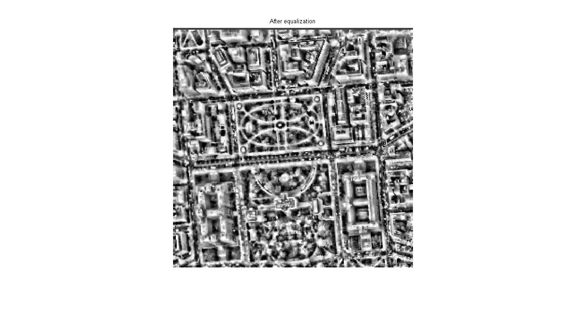

Shankar Jagadeesan
Teaching machines to see and respond

Image Enhancement - A comparison between Global & Local histogram equalization
This was part of my course project. I was given the image of White house and asked to do image enhancment by performing local and global histogram equalization on the images. The constrain is not to use any of the matlab inbuilt functions and to build your own histogram function for the above procedure. Performing a FFT with gamma correction and displaying the results is the last part of this project
Global Histogram Equalization
The way Global Histogram Equalization operates is by getting a Histogram that represent the different color weights on the horizontal axes verses the number of pixels that has a specific color weight on the vertical axes. For example, if we take image below as a gray level image to apply Histogram Equalization on it, we should get a narrow histogram as the output of detecting the number of pixels that each color weight level has.
If we apply the Histogram Equalization function to the input image histogram, we get the results as shown in image below. We can recognize the areas where the histogram is stretched and the areas where the histogram is compressed. The areas where the histogram is stretched are the areas where a big number of pixels represent a specific color weight value. But the areas where color weight values are represented with a small number of pixels are compressed. Such an operation changes the use of the different color weight values in such a way that makes the image being presented with the maximum different number of color weight values as possible. This can be obvious in image below, where we can see that the picture of the white house is now clearer than it was in input image. Some may think that the image has been made darker by reducing the value of the color weights with a fixed number. However, it is clear that some spots in the image have been made brighter. The added darkness and brightness to each color level value in the image, depending on its original number of pixels, is what make the resulting Histogram Equalization image clearer than the original one.
 | ||
| Original Image | Enhanced Image | Image histograms before and after equalization |
{kind=link}
{kind=link}
Local Histogram Equalization
The local histogram equalization is helpful when we need to study a specific object or spot in the image rather than having the whole image operated. This saves time for the operation to be executed, especially if the image is big and have a big number of pixels.In this Local Histogram Equalization, we can see that the operated part got a little bit brighter. The reason behind this is because the local area in the original image uses more dark color weight values than bright color values. This results on using more bright color weights in the resulting image. Below are the images when local histogram equalization in applied in blocks to all parts of the image.
 |
 | |
| Original Image | Enhanced Image | Image histograms before and after equalization |
{kind=link}
{kind=link}
FFT and Gamma correction
Gamma correction is mainly used in images where you need to alter the image pixel intensity. Here we get a FFT of the image and apply gamma correction of 2 to it. From the output you can see that the intensity has increased drastically.
| Original Image | FFT of the Image | Gamma corrected FFT Image |
{kind=link}
{kind=link}
{kind=link}